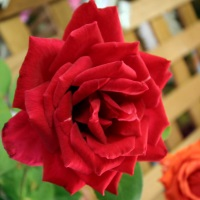
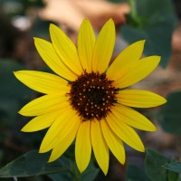
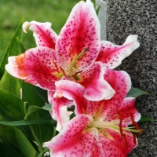

|
Flori
Trandafirul

Trandafirul a fost intotdeauna apreciat pentru frumusetea sa. Vecii greci si romani au vazut in trandafir
simbolul iubirii si astfel l-au asociat cu zeitele protectoare Afrodita respectiv Venus. De altfel stim si
noi ca trandafirul rosu exprima pasiunea si sunt oferiti doar celei iubite. Dar trandafirul nu este doar
expresia dragostei. Tot in Roma un trandafir salbatic era pus pe masa camerei in care se discutau lucruri
secrete.
Laleaua
Laleaua (Tulipa) a primit acest nume datorita asemanarii cu palariile orientale;
Vine din cuvantul persan „toliban”, care inseamna turban. Laleaua este des intalnita in parcuri, gradini,
terase datorita culturii relativ usoare, a coloritului frumos si a inflorii primavara. Este folosita si ca
floare taiata. Cele mai bune conditii pentru obtinerea lalelelor pot fi create doar in sere, dar cu un pic
de efort, lalelele pot fi crescute si in locuinte.
Floarea soarelui

Crinul

|